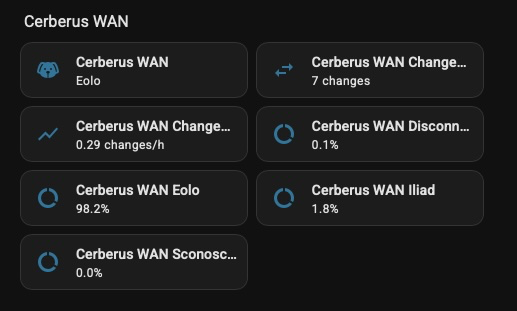
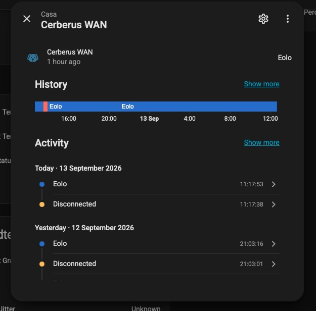

A Home Assistant integration that answers that one question, on any line and behind any router. Two DNS queries and a table you write yourself. No account, no API key, nothing that can be taken away.
Custom repository, not in the default HACS store yet. The button opens it inside HACS on your own instance.
If you have two internet connections, you are told less than you think.
The gateway integration reports the primary WAN and only that. When the
primary falls over, the public address it reports becomes
0.0.0.0 while the house is happily browsing through the backup.
A speedtest names the provider but runs once a day, so it samples nothing.
Reading it off the latency or the first hop works, and has to be redone by
hand every time something changes.
Cerberus WAN asks the outside world instead of asking the router: the public address as seen from outside, then who announces that address. The answer is the provider whose cable the traffic is on, whatever the router believes.
Everything here follows from them, and anything that fights them does not get built.
One thing only. No speedtest, no graphs, no diagnostics, no per interface counters.
No account, no API key, no quota, no terms of service. There is no third party to discontinue anything.
No YAML, no template to copy, no router to log into. One dialog, one field, and it opens with your network already in it.
No OID to hunt for, no vendor API, no model specific template. The address seen from outside is the same evidence everywhere.
Unknown is an answer, not an error, and it is kept apart from Disconnected. It never guesses.
A statistic that resets whenever Home Assistant does is a statistic that lies.
Values are written only when they move. Watching a quiet day does not grow your database.
Watch your WAN switch. Not bandwidth, not uptime, not quality of service.
Two DNS queries, asked at very different rates.
The second answer is kept locally and reused for 30 days, because an address does not change owner. A lookup that failed is retried within the hour, so a moment of DNS trouble does not become thirty days of an unknown provider.
There is no third party API. If DNS works, this works.
| Entity | What it holds |
|---|---|
| the provider sensor | the name of the line in use, with the public address and the announcing network as attributes |
| one share per provider | the percentage of the recorded day that provider carried the traffic |
| changes in 24 hours | how many times the line moved, as a window that survives a restart |
| changes per hour | the same window as a moving average |
Every switchover fires
cerberus_wan_provider_changed, and automations or scripts can
be hooked straight from the dialog.


Home Assistant 2024.6.0 or later, and outbound DNS on port 53. Nothing else. Full documentation is in the README.